About Me


Hii! My name is Petra (she/her), and I'm a queer 25-year-old English student from Austria! I used to be a frontend web developer, and am obviously a big fan of the web. This site is my appreciation for the old web!
I also draw, write, create playlists, make video edits, and do a bunch of other things that you might find on here!
I love fandom spaces and regularly get obsessed with certain pieces of media - you will see them around here.
Facts:
Me Core:
Click on the button below for a random fact about me!
Hobbies

Likes 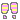
Dislikes

Favorite Shows
Favorite Movies
Favorite Actors

Favorite Channels
Favorite Music
Favorite Games
Favorite Books

Other Favorites
Click on the button below for a random favorite of mine!
Elsewhere
Visit me somewhere else.
I don't really use a lot of 'traditional' social media anymore. Here's why.
I do still use tumblr and pinterest, but decided not to link to them anymore.
- github
- greasyfork
- github website
- tumblr themes (on semi-permanent hiatus)
Aesthetics
Here are some aesthetics I enjoy! (I know they don't really fit my website...)


I also really enjoy gore (blood, guts, bruises, etc) but I didn't include it here in case it might be triggering to someone!
GPOY
Some images that describe me really well.
 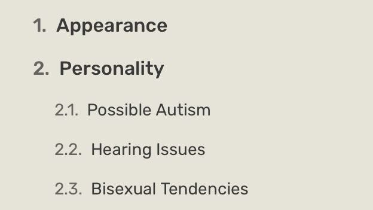 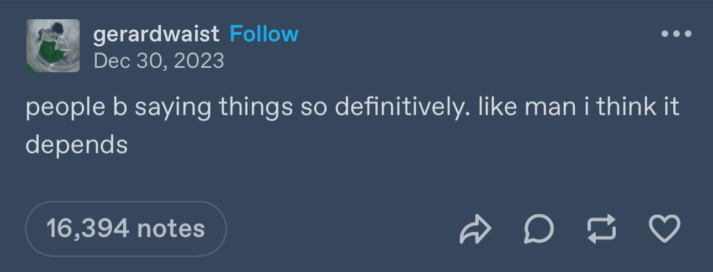 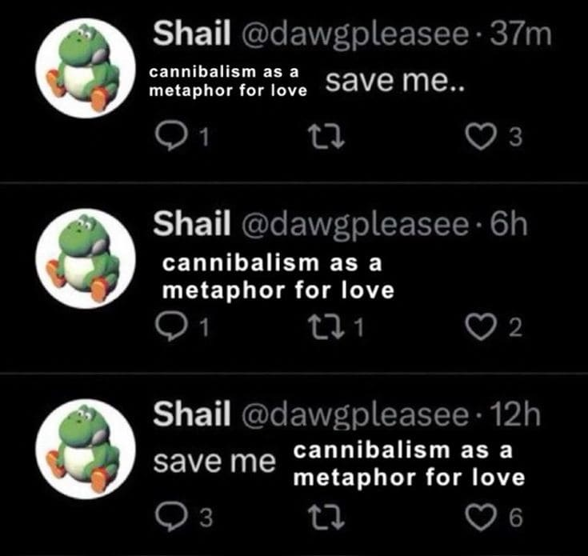 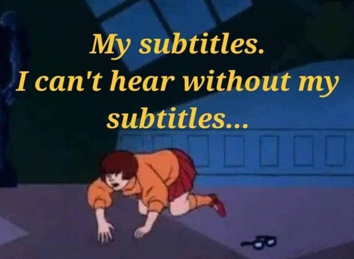 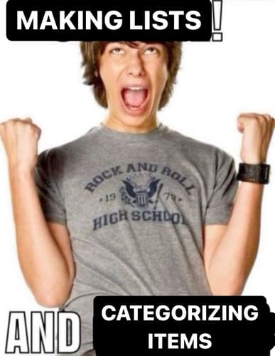 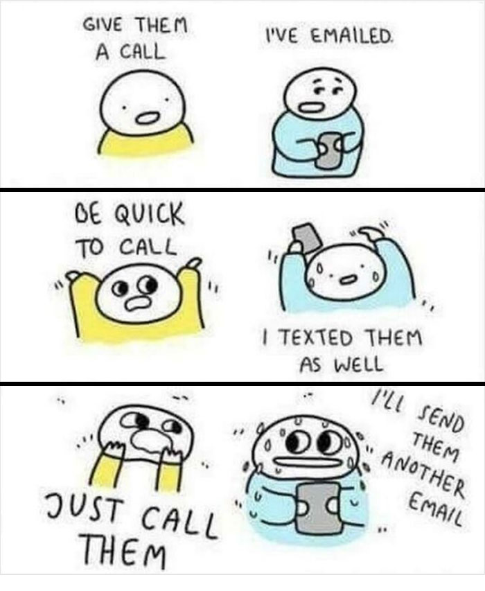
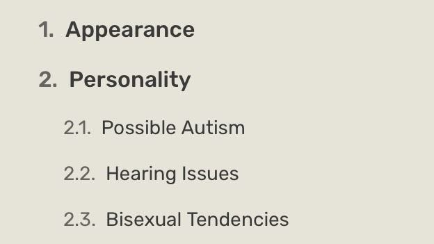 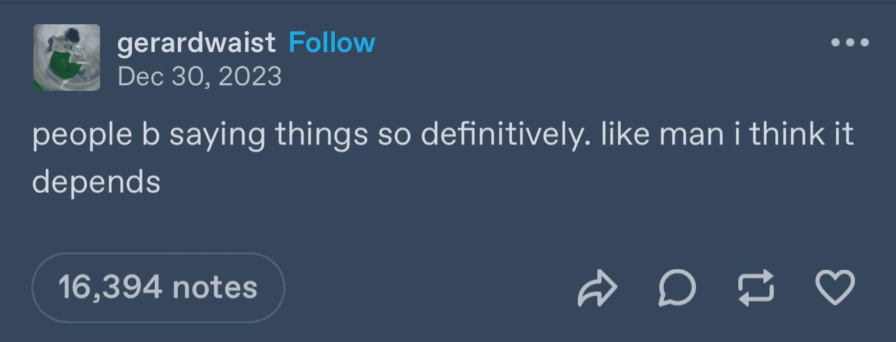 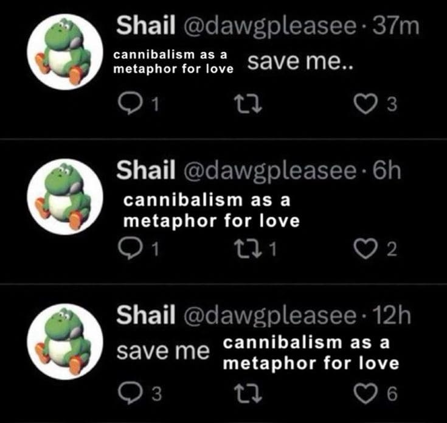 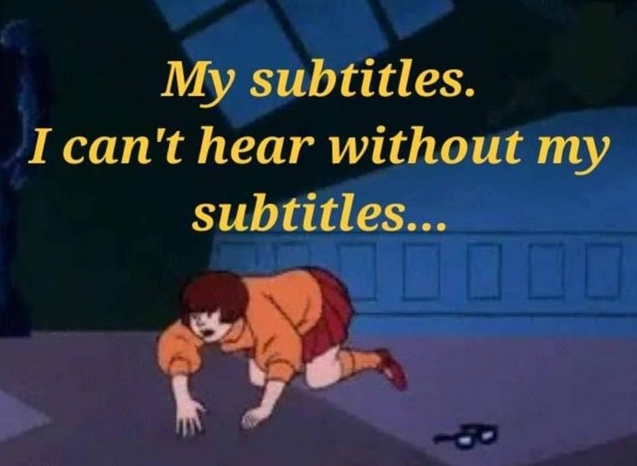 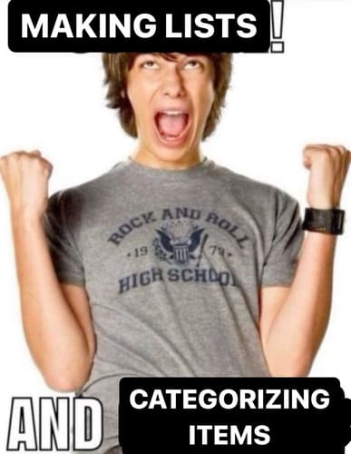 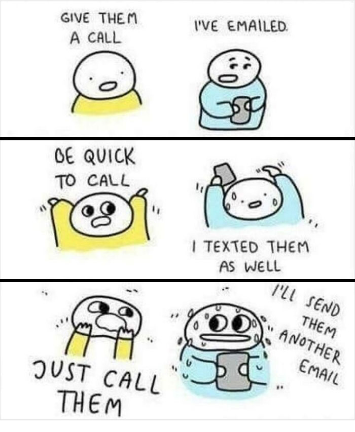